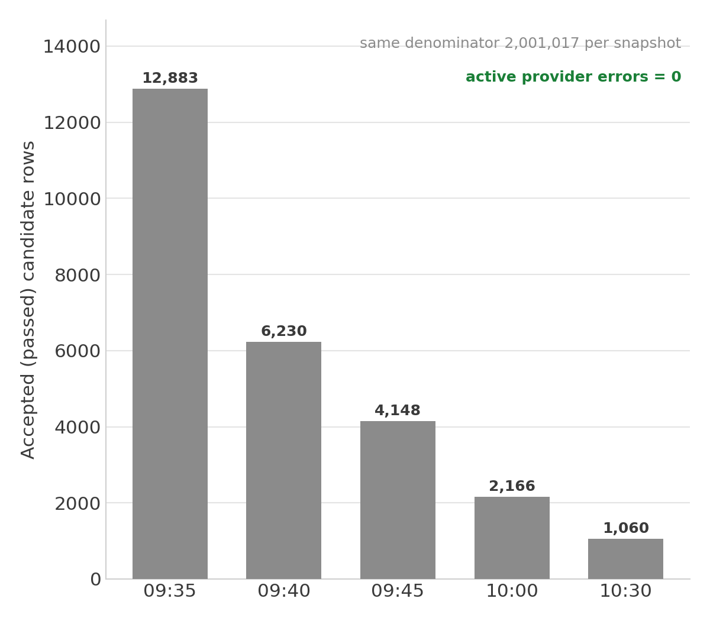
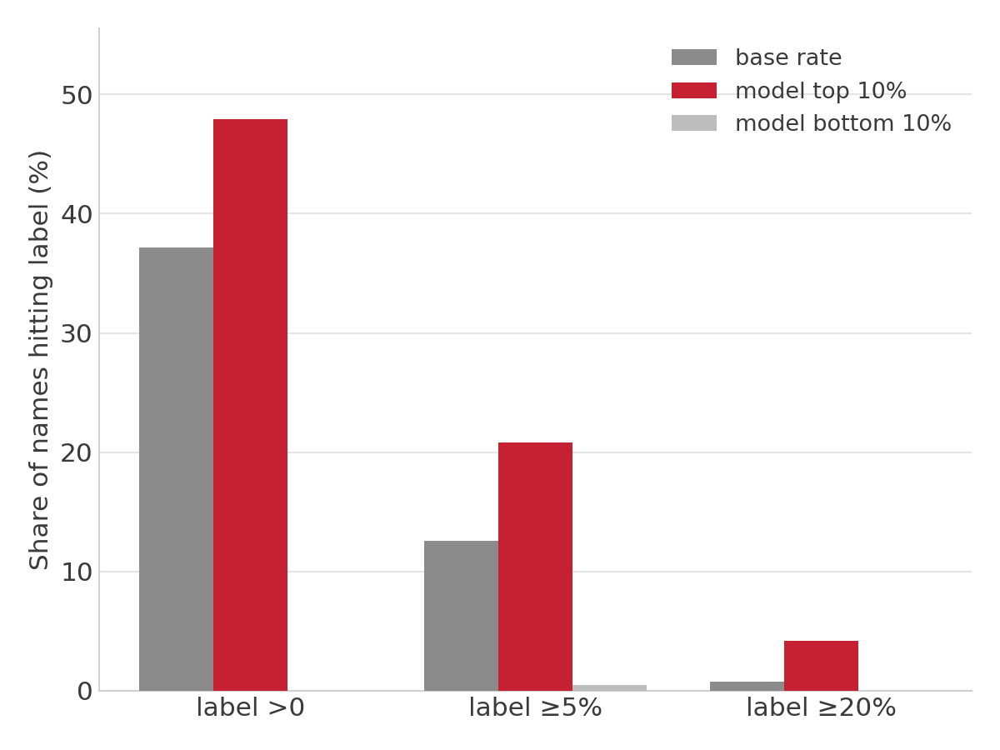
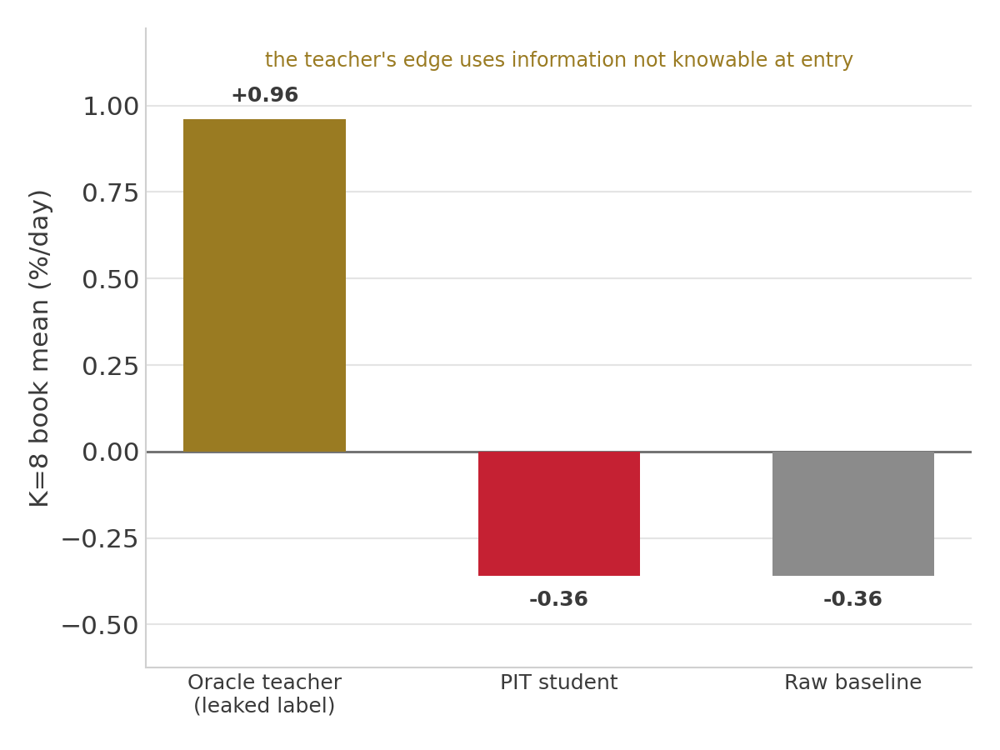
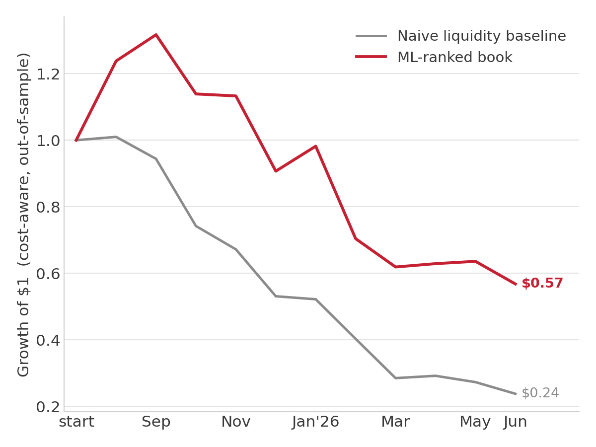
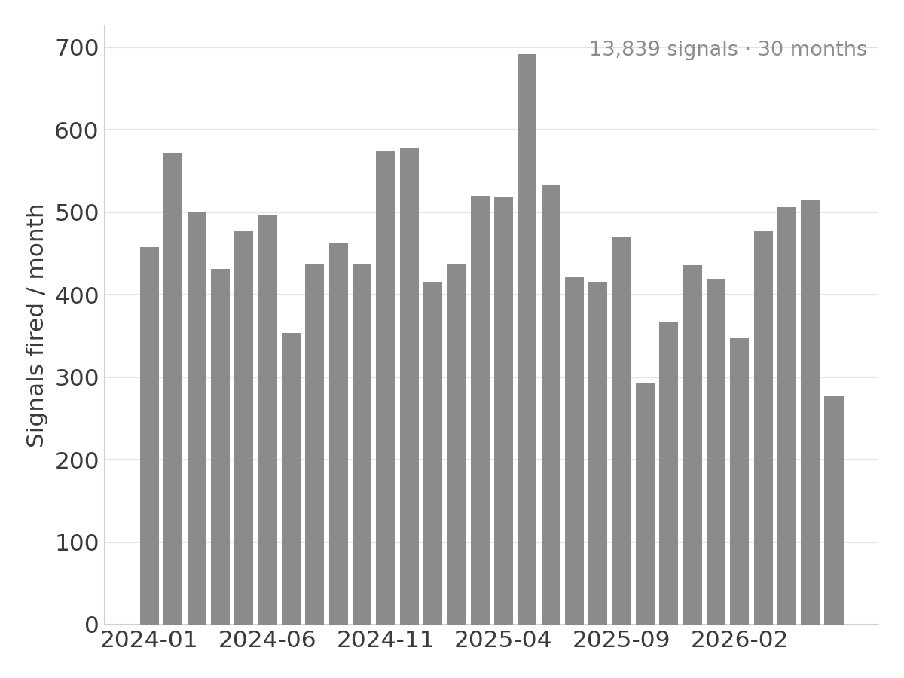
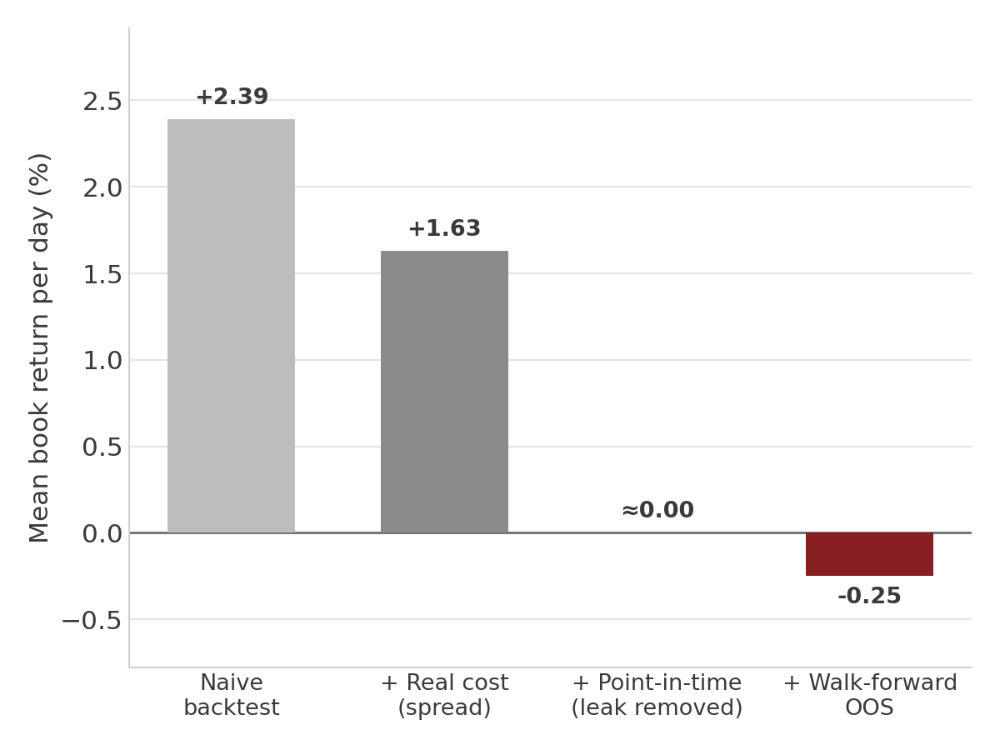
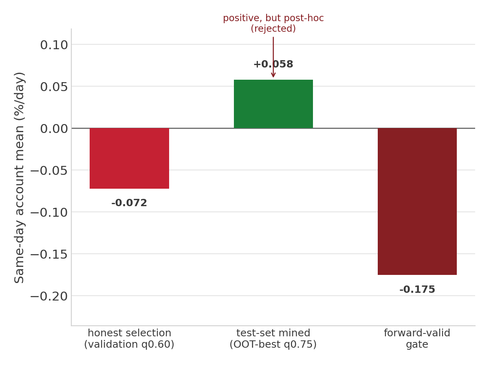
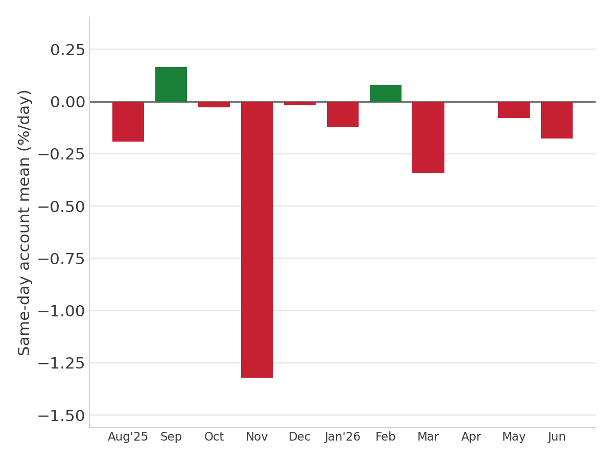
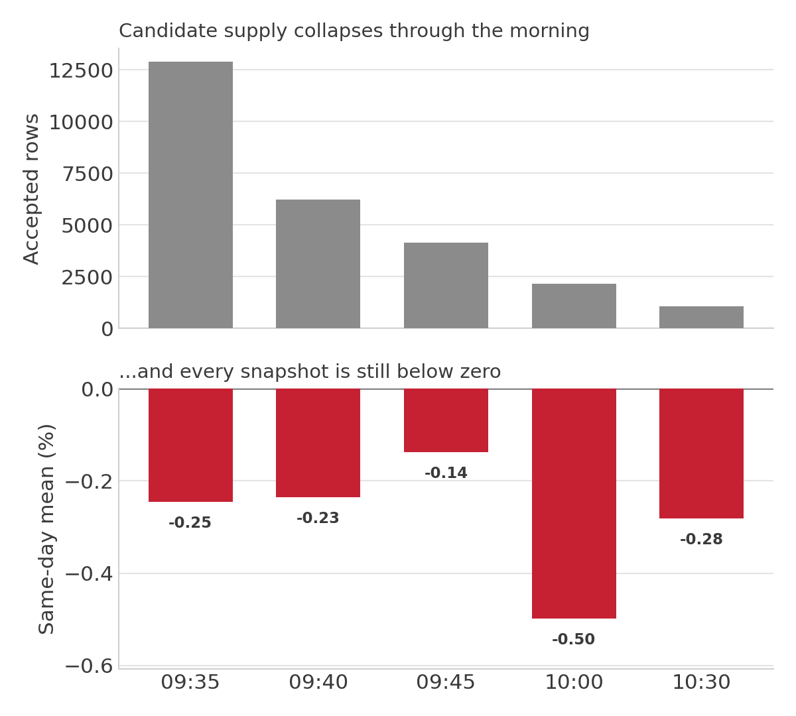

A production-style market-data and machine-learning platform for testing U.S. equity signals under point-in-time, survivorship-correct, cost-aware conditions.
Six live data integrations feed a lineage-tracked PostgreSQL evidence spine; models train only on features knowable at the decision timestamp and are judged with purged walk-forward validation.
Built a research platform rigorous enough to reject its own leading strategy.
A strategy that looks brilliant on historical data is usually measuring a mistake, not an edge.
The common failures all share one root: the test quietly uses information that wasn't available at the time. It scores against today's surviving companies and silently drops the ones that delisted or went to zero. It lets full-day or future values leak into features. It assumes perfect, costless fills.
Alpha Capital was built to answer a single, strict question for every signal:
Each research direction starts from a literature-backed market mechanism, then runs through Alpha Capital's own point-in-time, survivorship-corrected, cost-aware pipeline. The papers motivate hypotheses; they do not substitute for validation. Most are supposed to die in that pipeline; the value is a system honest enough to tell which few don't.
Literature-backed, not literature-proven: the citations define mechanisms and known failure modes; Alpha Capital re-tests every hypothesis against its own leakage-guarded, cost-aware validation stack.
An automated, end-to-end pipeline — from six provider integrations to validated, leakage-controlled research artifacts.
Architecture controls
Alpha Capital normalizes market data, listings, filings, news, and quote evidence into a lineage-tracked PostgreSQL store. Each row is tied back to the provider attempt that produced it, so the system can distinguish a real no signal from missing data, a provider failure, a parser failure, or an intentional exclusion.
Scale
Parameterizable U.S. equity universe; the Capitulation-Volume Bounce worked example focused on $30M–$5B small caps.
Five accepted corpora

Data-integrity states
| State | Meaning |
|---|---|
| Valid observation | Fetched, parsed, and normalized successfully. |
| Provider fetch error | The API call failed or returned an error; the attempt is recorded, not a silent absence. |
| Parser / normalization error | Payload arrived but could not be cleanly mapped to the schema. |
| Missing-but-expected | A source attempt was expected but produced no row. |
| Intentional exclusion | Filtered out by rule (non-common, ETF, ineligible security type). |
| No signal / did not qualify | Clean data that simply did not meet the pattern's conditions. |
Why this is hard
Most retail backtests use today's ticker list and clean historical bars. Alpha Capital instead reconstructs what the market looked like on each historical date, including delisted names, provider gaps, split adjustments, stale quotes, and failed fetches. That is the difference between a chart and an auditable dataset.
The evidence spine, in SQL
The point-in-time and fail-closed guarantees are enforced in the queries and the schema, not just described. Two representative examples from the repository:
i12_pit_ is the internal table prefix for the point-in-time worked-example corpus (the Capitulation-Volume Bounce); the scratch-schema qualifier is omitted below for readability.
WITH scoped AS (
SELECT i12_pit_candidate_id
FROM i12_pit_candidates
WHERE is_active IS TRUE
AND candidate_status = 'passed'
AND decision_date BETWEEN :start_date AND :end_date
AND decision_time_label = :decision_time
AND path_mode = :path_mode
), counts AS (
SELECT scoped.i12_pit_candidate_id,
COUNT(child.i12_pit_quote_replay_id) AS row_count
FROM scoped
LEFT JOIN i12_pit_quote_replays child
ON child.i12_pit_candidate_id = scoped.i12_pit_candidate_id
AND child.quote_role = :role
AND child.is_active IS TRUE
GROUP BY scoped.i12_pit_candidate_id
)
SELECT
SUM(CASE WHEN row_count = 0 THEN 1 ELSE 0 END) AS missing_count,
SUM(CASE WHEN row_count > 1 THEN 1 ELSE 0 END) AS duplicate_count
FROM counts;Scopes to active, passed candidates inside the decision window, then verifies each required quote role has exactly one active evidence row. Any missing or duplicate count halts the tape build instead of silently producing an ML artifact.
CREATE TABLE historical_universe_reconstructions (
replay_date DATE NOT NULL,
normalized_symbol TEXT NOT NULL,
inclusion_status TEXT NOT NULL,
delisted_date DATE,
reconstructed BOOLEAN NOT NULL DEFAULT true,
input_hash TEXT NOT NULL,
output_hash TEXT NOT NULL,
-- ... lineage, provenance, and job-run columns ...
CONSTRAINT ux_historical_universe_recon_date_symbol
UNIQUE (replay_date, normalized_symbol)
);One reconstructed row per (historical date, symbol) — the structural guarantee behind survivorship-correct point-in-time universes, delisted names included. Condensed from the Alembic migration; the production table also carries provenance, lineage, job-run, foreign-key, and index fields.
The public page and GitHub repository show derived / aggregate artifacts only; raw licensed market data and credentials are excluded.
Alpha Capital is not a notebook backtest. It is an automated research system: provider adapters, PostgreSQL schemas, lineage tables, nightly jobs, fail-closed integrity gates, reproducible artifacts, and a test suite around the parts most likely to lie.
Failure modes handled
Why the plumbing matters
In market research, bad plumbing creates fake alpha. The engineering work is what prevents missing data, stale artifacts, or future information from becoming a polished but false result.
In the repository
Built with
Every control below exists to make sure the data cannot quietly lie.
Alpha Capital does not trust a backtest because it looks good. Each result is forced through leakage checks, source-row reconciliation, cost realism, walk-forward validation, threshold-mining tests, and independent reruns. A strategy can advance only if the data, the model, and the accounting all agree.
Multiple-testing discipline
Raw backtest returns are not enough. A strategy can look profitable simply because enough variants, thresholds, snapshots, and filters were tried. Alpha Capital treats research as a multiple-testing problem: validation emphasizes walk-forward splits, bootstrap refutation, and deflated-Sharpe-style controls before any result is considered credible.
Academic anchors: Sharpe (risk-adjusted performance) · Lo (2002), "The Statistics of Sharpe Ratios" · Bailey & López de Prado (2014), "The Deflated Sharpe Ratio" · Sullivan, Timmermann & White (1999), data-snooping Reality Check.
Audit trail
Alpha Capital uses scikit-learn models as selection engines, not as proof of an edge. A model scores each candidate using only point-in-time features; the book is then judged out-of-sample after spread, slippage, tradeability, and cash handling.
Model card
HistGradientBoostingRegressor; regularized with min leaf size, L2, and early stopping.OOS readout
| OOS candidates | 8,751 |
| Predictor fields | 19 |
| Model family | HistGradientBoosting (HGBR) |
| Validation | purged / embargoed walk-forward |
| Result | measurable statistical separation; economic promotion blocked |
| Economic verdict | no-go after spread / slippage |
| Promotion | blocked |

0, >=5%, and >=20%, the model's top-10% slice beats the base rate while the bottom 10% is near zero.">Research-shadow prototypes: the signal was real enough to pursue
Research-shadow onlyNot promoted
Before the final point-in-time, cost-aware gate, I ran several research-shadow ML tests to check whether the model could rank candidate events better than hand rules. These were not production claims: some were PIT-deferred or prototype runs, and later validation was stricter. But they showed meaningful rank separation and justified building the full leakage-controlled pipeline.
These were research-shadow evidence, not promotion evidence. The later point-in-time, survivorship, spread, slippage, and walk-forward gates reduced or blocked the strategy. That is the point of the platform: promising models are not allowed to graduate unless the full evidence chain survives.
Oracle diagnostic: predicting the forbidden full-day-volume signal
The original Capitulation-Volume Bounce rule used full-day volume, which is not knowable at entry and is therefore banned as a live predictor. I turned that leaked rule into an oracle label and asked a stricter question: can point-in-time morning features predict which names will later satisfy the full-day-volume condition? This was a read-only scikit-learn diagnostic, fit in memory only, with no registry, model, or scoring writes.
Morning structure is partially predictive of the future condition: per-snapshot AUC runs 0.59 to 0.67, and 0.751 pooled across the five snapshots. Some of the forbidden full-day-volume behavior is genuinely inferable from what was knowable at the open. But predictive separation is not a tradeable edge: the point-in-time student book still printed a negative cost-aware daily mean and failed the loser/tail and walk-forward checks, so promotion stayed blocked.

Predictors vs. labels: the firewall
The rule: future and full-day data can define an outcome to predict, but can never enter the feature vector. Any predictor that crosses the line is rejected before training (the leakage audit below enforces it).
Implementation proof
These snippets aren't decorative; they're the enforcement points in the repository's real scikit-learn pipeline, not an AI simulation or notebook toy:
I12 is the codebase's internal name for the Capitulation-Volume Bounce, so it appears in the constant names and file paths below.
def _new_gbrt_model(*, max_iter, random_state, model_params=None):
from sklearn.ensemble import HistGradientBoostingRegressor
params = dict(model_params or {})
return HistGradientBoostingRegressor(
max_iter=max_iter,
min_samples_leaf=int(params.get("min_samples_leaf", DEFAULT_MIN_SAMPLES_LEAF)),
l2_regularization=float(params.get("l2_regularization", DEFAULT_L2_REGULARIZATION)),
early_stopping=_bool_model_param(params.get("early_stopping"), DEFAULT_EARLY_STOPPING),
random_state=random_state,
)The estimator: a histogram-based gradient-boosted regressor, regularized (leaf-size + L2) and early-stopped to resist overfitting.
FORBIDDEN_ZONE_TOKENS = (
"forward", "post_signal", "post-signal",
"outcome", "label", "future", "exit",
)
# A predictor is rejected before training if it names a banned
# (projected / full-day / outcome) path, or isn't on the frozen allowlist.
if locator in I12_PIT_BANNED_FEATURE_PATHS:
raise FeatureSelectionError(
"I12 PIT-clean feature schema requested a banned projected, "
f"full-day, or outcome field: {field!r}"
)
if locator not in I12_PIT_0940_ALLOWED_FEATURE_PATHS:
raise FeatureSelectionError(
"I12 PIT candidate feature is not in the frozen inclusion "
f"allowlist: {field!r}"
)Look-ahead made structurally impossible: any feature touching a forward/outcome zone, or absent from the frozen allowlist, raises and halts training, rather than silently inflating a result.
embargo = max(horizon_sessions, embargo_sessions)
train_cutoff = min(test_positions) - embargo
test_identities = {
_security_identity_key(row)
for row in examples if row.signal_date in set(block)
}
# Train rows must be strictly earlier than the test block (date purge)
# AND share no security with it (cluster purge), so nothing overlaps.
train_indices = [
idx
for idx, row in enumerate(examples)
if date_to_position[row.signal_date] < train_cutoff
and _security_identity_key(row) not in test_identities
]The CV split is both date-purged (train strictly precedes test by the full horizon) and cluster-purged (no security appears on both sides), closing the two ways a time-series backtest usually leaks.
Reproducibility trace
The honest read: the model found measurable rank separation versus naive baselines, but the book still failed the economic bar after spread, slippage, and walk-forward validation. A model that scores better than chance yet loses to cost is not a tradeable edge; the platform is built to report that, not bury it.
The strongest proof of the system was not a winning chart. It was a clean no-go decision on my own leading strategy after the data controls caught what the naive backtest missed.
Case file
What changed from naive to real



Why this matters
Most backtests fail because they accidentally let future information or impossible execution into the result. This case study shows the opposite workflow: start with a plausible signal, rebuild it point-in-time, charge realistic costs, test it out-of-sample, and accept the verdict. The platform preserved integrity over a flattering backtest.
The platform separates validation into two decisions: whether the data is trustworthy, and whether the strategy is tradeable. For the worked example, the data passed; the strategy did not. That distinction is the point.
Group A · Data & corpus gatesPassed
Group B · Feature & leakage gatesPassed
Group C · Economic & promotion gatesFailed
Forward-valid gate evidence


Final validation decision
Data, tape, and model evaluation: GO. Strategy promotion: NO-GO. The pipeline did not fail; it did its job by blocking a flattering but non-tradeable result.
Representative artifacts: i12_pit_stage1_analysis_5snap_3f5ed25.json · i12_pit_0940_walk_forward_threshold_gate_3f5ed25.json · i12_pit_oracle_full_day_volume_labels_5snap_3f5ed25.json.
The ranker improved on every naive baseline, yet the same-day book still lost money after spread and slippage. Same-day (flat by close) is the primary verdict; next-open appears only as a comparison. Every figure is modeled, cost-aware, and out-of-sample; not live P&L.
Sample & split
Primary policy: same-day K=8 book
The live policy ranks each session's candidates by model score and takes up to K=8. K is a cap, not a forced-deployment mandate: skipped or untradeable names become cash, not dropped rows. "Same-day" means flat by the close (a same-day modeled exit), the strictest and most live-like basis, so it is the primary verdict.
| Policy | Mean / day | Median / day | Positive | Max DD | Verdict |
|---|---|---|---|---|---|
| ML-ranked K=8 book | −0.337% | −0.514% | 41.9% | −69.6% | No-go |
| Raw detector baseline | −0.362% | −0.592% | 42.3% | −66.1% | No-go |
| Persistence-only baseline | −0.567% | −0.468% | 43.2% | −75.5% | No-go |
| Liquidity / spread-only baseline | −0.683% | −0.966% | 38.7% | −81.7% | No-go |
Held-out candidate rows (8,751 OOS rows): mean −0.249% per event · median 0.00% · 36.1% win rate. The typical event went nowhere net of cost; the return that exists sits in a thin right tail the ranker cannot reliably pre-select.
The takeaway is precise: the ML-ranked book beats all three baselines on mean (−0.337% vs −0.362% / −0.567% / −0.683%), so the model did reduce bad selection. But beating weak baselines is not the bar; same-day economics stay negative after cost, the bootstrap CI is fully below zero, and promotion is blocked.
Next-open comparison
Holding to the next open did not rescue the signal. It softened the mean loss to −0.252%/day (median −0.413%, 43.2% positive sessions, max drawdown −66.9%), but the block-bootstrap 90% CI was [−0.619%, +0.100%]; it still crossed zero, so promotion remained blocked.
| Month | Mean / day | Month | Mean / day |
|---|---|---|---|
| Aug ’25 | +1.02% | Feb ’26 | −1.73% |
| Sep ’25 | +0.29% | Mar ’26 | −0.59% |
| Oct ’25 | −0.63% | Apr ’26 | +0.08% |
| Nov ’25 | −0.03% | May ’26 | +0.05% |
| Dec ’25 | −1.00% | Jun ’26 | −0.81% |
| Jan ’26 | +0.40% |
Source artifact: engine/artifacts/stage0/i12_pit_stage1_analysis_5snap_3f5ed25.json (local; derived data, not committed).
Every candidate was evaluated at five point-in-time decision timestamps: 09:35, 09:40, 09:45, 10:00, and 10:30. The point is not to cherry-pick the best timestamp after the fact; it is to test whether a signal survives realistic entry timing rather than one convenient, assumed fill.
| Snapshot | Full accepted | OOS rows | Same-day mean | Median | Win rate |
|---|---|---|---|---|---|
| 09:35 | 12,883 | 4,223 | −0.246% | 0.00% | 33.4% |
| 09:40 | 6,230 | 2,026 | −0.235% | 0.00% | 37.5% |
| 09:45 | 4,148 | 1,386 | −0.138% | 0.00% | 38.5% |
| 10:00 | 2,166 | 752 | −0.498% | −0.381% | 39.2% |
| 10:30 | 1,060 | 364 | −0.281% | −0.299% | 44.0% |

For each row, predictors were computed only from bars available before that decision timestamp. Later snapshots and full-day outcomes were used as labels and diagnostics only, never as features.
Legacy next-open diagnostic
The final output was a reusable research platform and the discipline to reject its own leading strategy on the evidence. That is the skill: build the system, run the evidence, and accept the result.
Next research direction: liquid all-cap strategy discovery, where spreads are tighter, execution is cleaner, and a lower raw edge may be more deployable.